Structure First
Beauty Always
Consistency Everywhere
Senior Brand Designer & Creative Director
30+ Years Crafting Trust Beyond Borders
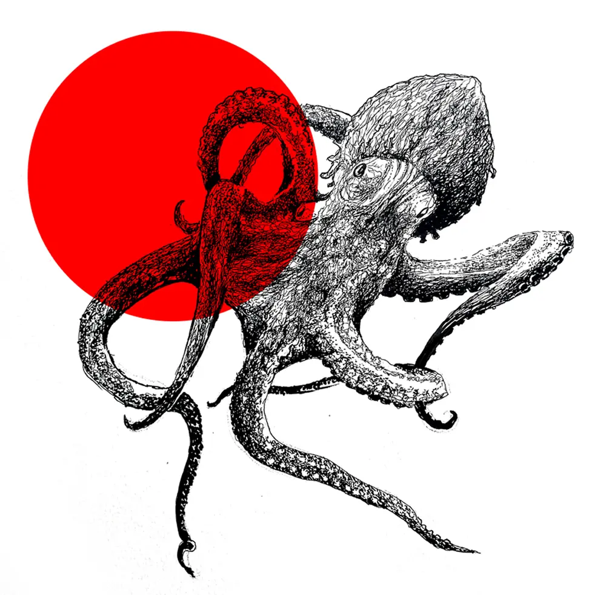
"Renato introduced a distinctive thinking framework that significantly strengthened our brand. Across all our units, his visual language ensures everything aligns with our core purpose. He captured our essence and translated it into a cohesive, impactful identity. I confidently recommend his ability to deliver strategic design solutions."
 Featured Project
Featured Project
 Editorial
Editorial
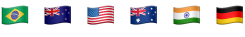
Branding, Architecture, Experience Design
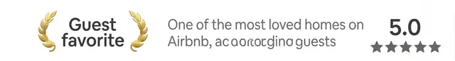
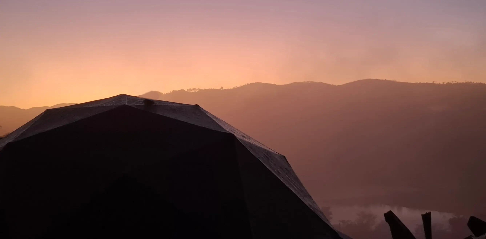
Timeless Craft
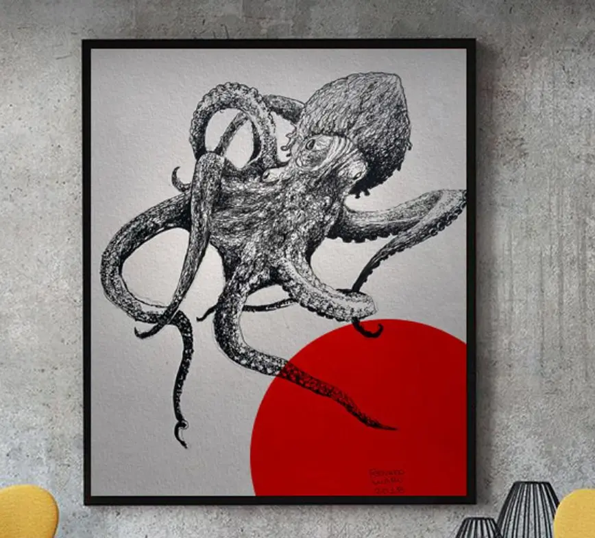
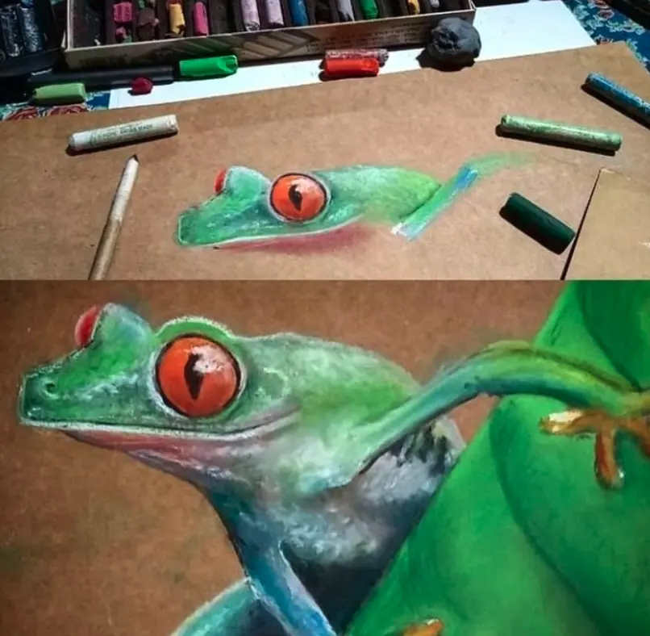
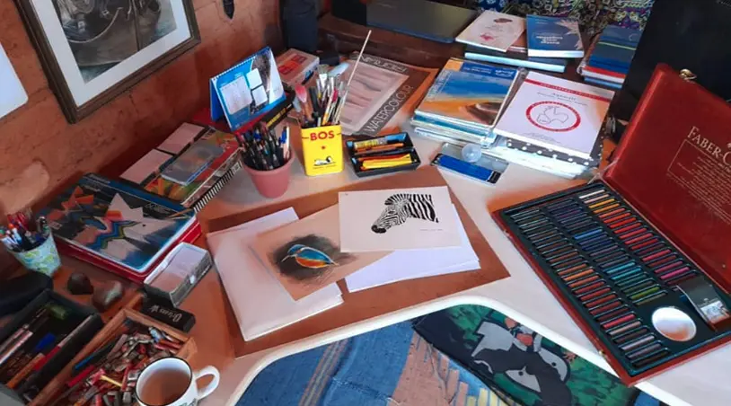
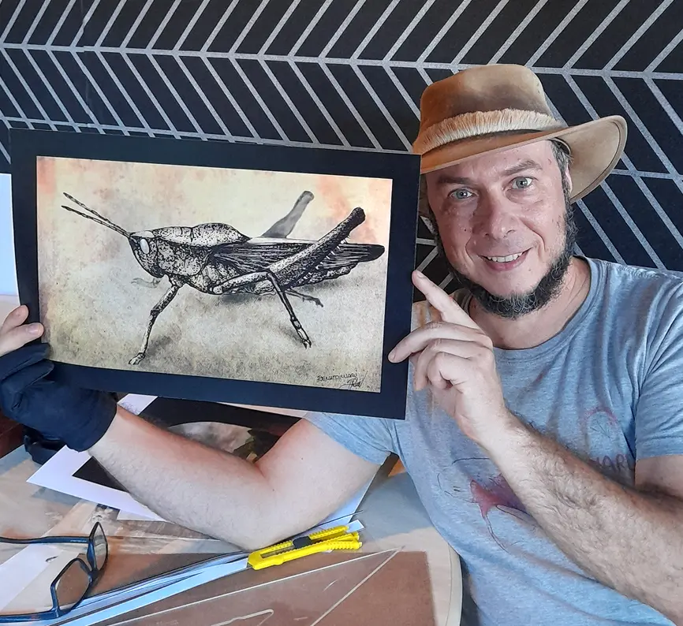
The background in traditional fine arts ensures that every digital concept starts with a human touch.
Quick Wins
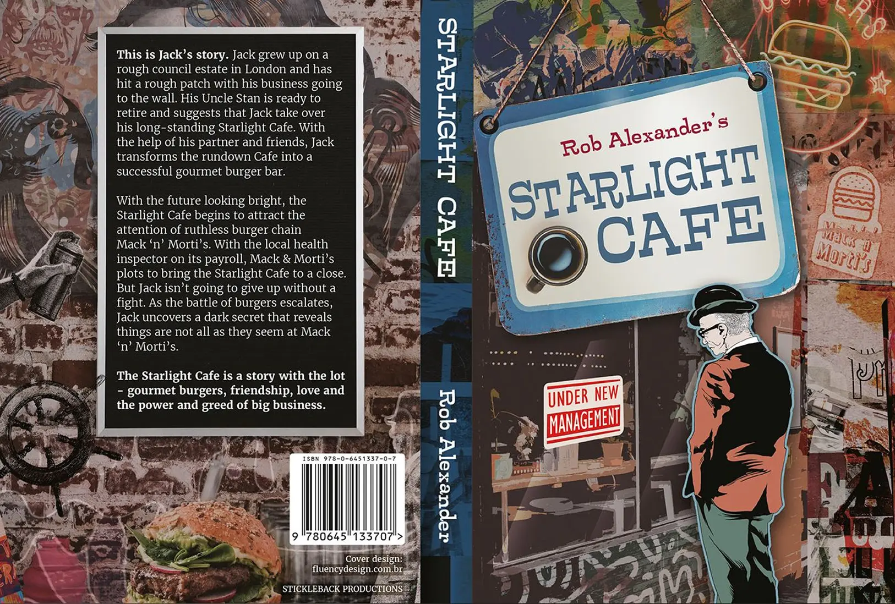
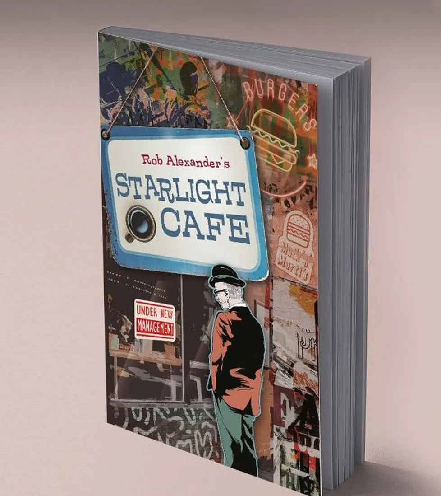
The concept for this cover was to create a collage, so that each time the reader picks up the book they will recognize some new element of the story.
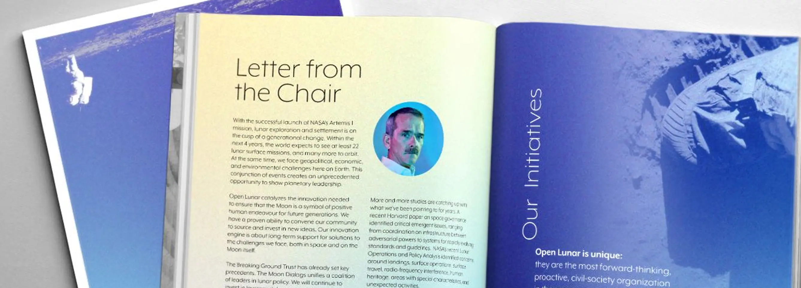
Open Lunar is an active observer of the United Nations Committee on the Peaceful Uses of Outer Space.
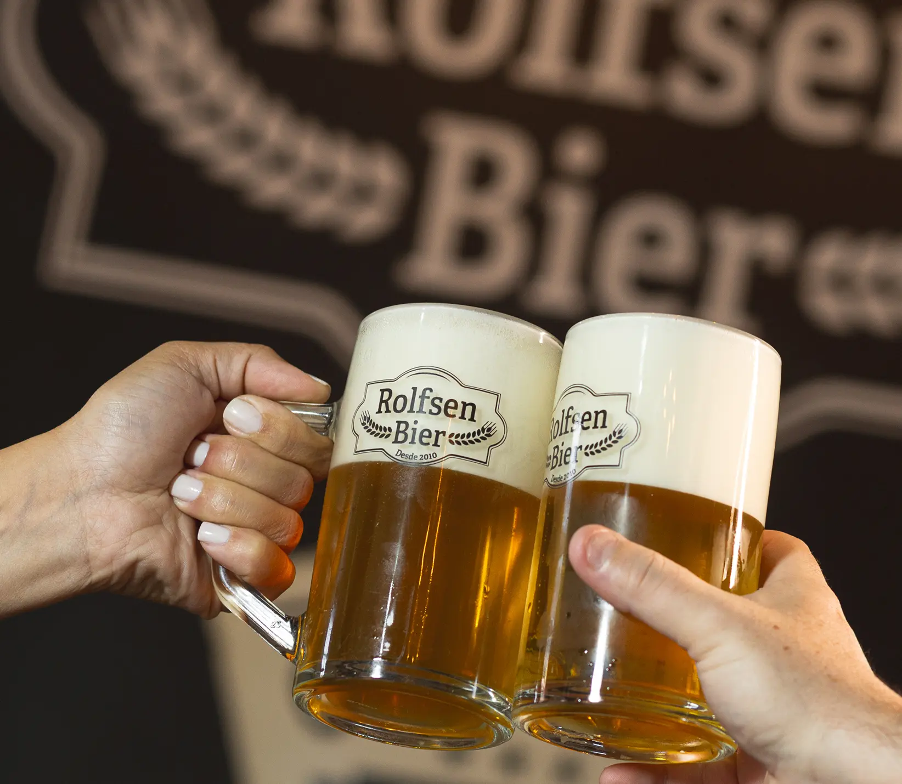
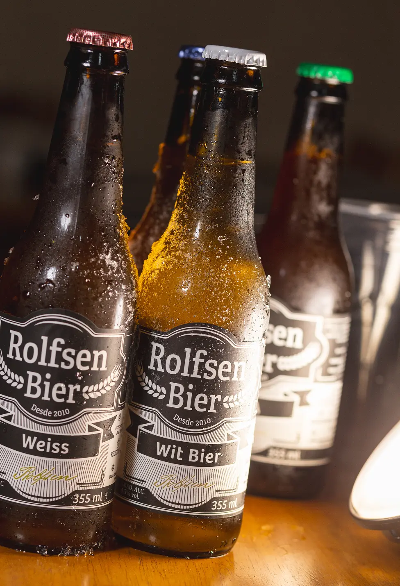
The challenge here was to create a strong identity using only black and white. This makes the brand stand out among countless other craft beer brands, which are usually full of colors.
Services
+30 years working together with people that value
Building the visual foundation. From strategic positioning and logo design to comprehensive guidelines that ensure consistency across touchpoints.
Translating complexity into clarity. Structuring information for books, reports, and educational materials that require both aesthetic identity and visual storytelling.
Bridging the digital and physical. Designing environments and digital interfaces that prioritize the user journey and human connection.